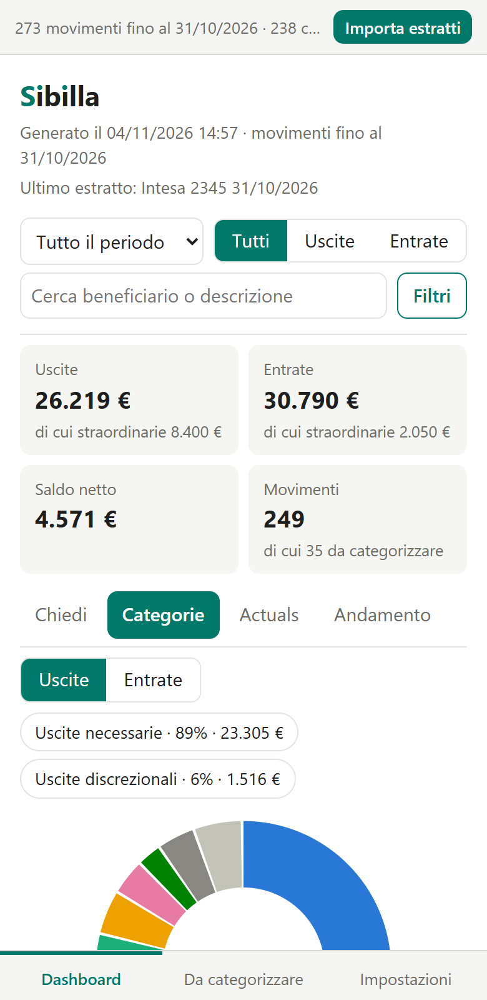
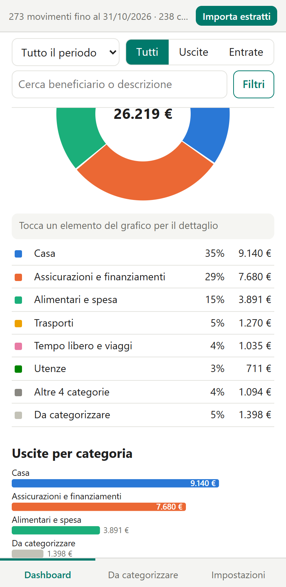
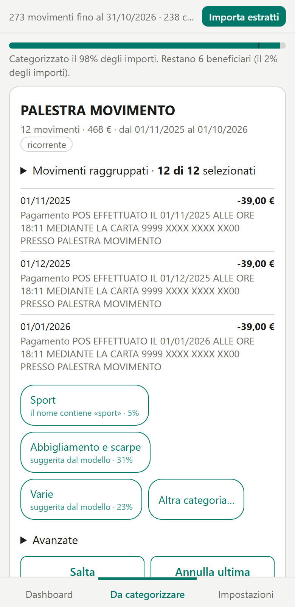
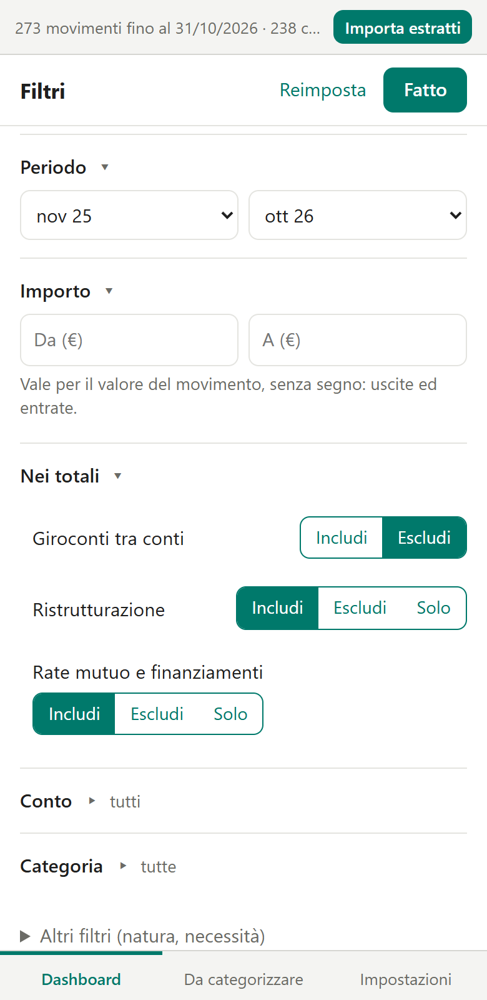
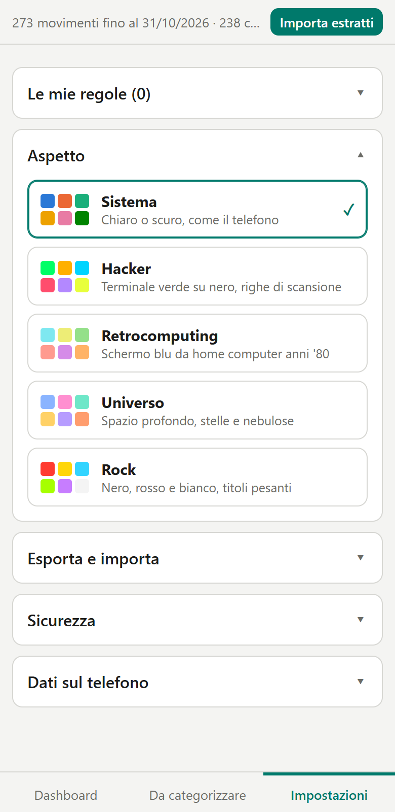

ESTRATTI
Legge i PDF della tua banca.
Intesa Sanpaolo, UniCredit e Trade Republic, e in automatico anche le altre banche. Gli estratti si leggono sul telefono e ogni lettura è confrontata con i saldi del PDF: se non quadra, l'app te lo dice.
CONTI DI CASA · SUL TELEFONO
Carichi gli estratti della banca, Sibilla li legge e ti mostra entrate, uscite e categorie. Poche risposte bastano a sistemare quasi tutti i movimenti. Tutto resta sul telefono.

ESTRATTI
Intesa Sanpaolo, UniCredit e Trade Republic, e in automatico anche le altre banche. Gli estratti si leggono sul telefono e ogni lettura è confrontata con i saldi del PDF: se non quadra, l'app te lo dice.
DOMANDE
«Quanto spendo in shopping negli ultimi 3 mesi?», «la spesa alimentare sta aumentando?». Le risposte sono calcolate dai tuoi movimenti, sul telefono: nessuna intelligenza artificiale che inventa numeri.
CATEGORIE
Catene note, utenze, stipendio, giroconti e prelievi hanno già una categoria. Il resto ti viene chiesto una scheda alla volta, prima le voci più grandi.
PROPOSTE
«Il nome contiene farmacia», «simile a un beneficiario che hai già classificato». Quando più indizi concordano, li confermi tutti con un tocco.
INTERMEDIARI
Il negozio dietro il pagamento viene riconosciuto; PagoPA e simili, che non dicono a chi hai pagato, si categorizzano movimento per movimento.
DASHBOARD
Uscite necessarie e discrezionali, andamento mese per mese, ricerca, filtri per importo. Puoi escludere giroconti, ristrutturazioni e rate.
REGOLE
Esporti le regole e le reimporti su un altro telefono: stessi estratti e stesse regole danno gli stessi numeri. Il file non contiene importi né date.
Fatte con dati inventati: nessun estratto reale.




L'app non è sul Play Store: si installa dal file APK.
Per provarla senza usare i tuoi conti, la guida ha due estratti conto di esempio da importare.
Disinstallare l'app cancella tutto. Prima, esporta le regole da Impostazioni e conserva i PDF: potrai reimportarli.
SHA-256 dell'APK: 07c5c8ea3834fb3ec6c3f1efb5b97a31e7696b0539e6057e6046ee12ae9ba5f2
Certificato di firma (SHA-256): b89a30ff7d6260ca73f699fae577a496d814870ca5730e25d0d4ad116b75555a